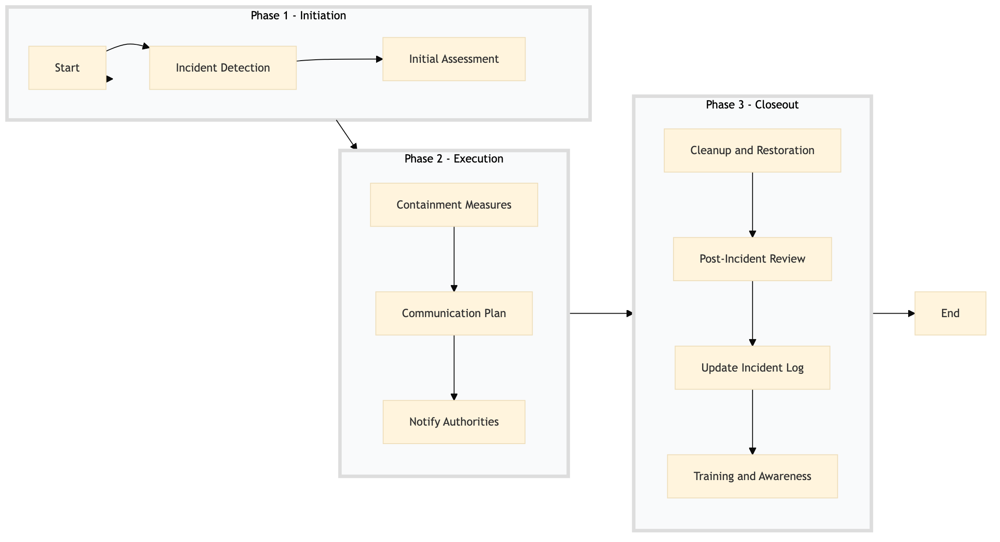

| Role | Steps |
|---|---|
| Executive Housekeeper | 1.1 3.3 |
| Facilities Manager | 1.2 2.1 3.2 3.4 |
| Facilities Engineer | 2.3 3.1 |
| Guest Services Manager | 2.2 |
| Security Manager | 2.3 |
| Step | Name | Role | System | Input | Output | KPI | Dec? | Exc? | Pain Point / Risk |
|---|---|---|---|---|---|---|---|---|---|
| 1.1 | Incident Detection | Executive Housekeeper | Oracle OPERA Cloud | Environmental Incident Report Form | Incident Log Entry | Less than 5 minutes | N | Y | Delayed detection can lead to escalation of the incident. |
| 1.2 | Initial Assessment | Facilities Manager | Oracle OPERA Cloud, Honeywell INNCOM | Incident Log Entry | Assessment Report | Less than 10 minutes | Y | N | Inaccurate assessment can lead to improper response. |
| 2.1 | Containment Measures | Facilities Engineer | Schneider EcoStruxure, Honeywell INNCOM | Assessment Report | Containment Plan | Less than 15 minutes | Y | Y | Failure to contain the incident can lead to further damage. |
| 2.2 | Communication Plan | Guest Services Manager | Oracle OPERA Cloud, Book4Time | Containment Plan | Communication Script | Less than 5 minutes | N | Y | Miscommunication can lead to guest dissatisfaction. |
| 2.3 | Notify Authorities | Security Manager | Assa Abloy VingCard, Honeywell INNCOM | Communication Script | Notification Acknowledgment | Less than 10 minutes | Y | Y | Non-compliance with local regulations. |
| 3.1 | Cleanup and Restoration | Facilities Engineer | Schneider EcoStruxure, Honeywell INNCOM | Containment Plan | Cleanup Report | Less than 30 minutes | Y | Y | Inadequate cleanup can lead to ongoing environmental issues. |
| 3.2 | Post-Incident Review | Facilities Manager | Oracle OPERA Cloud, Honeywell INNCOM | Cleanup Report | Incident Review Report | Less than 1 hour | Y | N | Lack of review can lead to recurring incidents. |
| 3.3 | Update Incident Log | Executive Housekeeper | Oracle OPERA Cloud | Incident Review Report | Updated Incident Log Entry | Less than 5 minutes | N | Y | Inaccurate log entries can lead to mismanagement. |
| 3.4 | Training and Awareness | Facilities Manager | Oracle OPERA Cloud, Book4Time | Incident Review Report | Training Plan | Less than 1 week | Y | N | Lack of training can lead to future incidents. |
This process outlines the steps to be taken in response to an environmental incident at a Marriott full-service hotel. It ensures that the incident is handled efficiently and effectively, minimizing impact on guests and the environment.